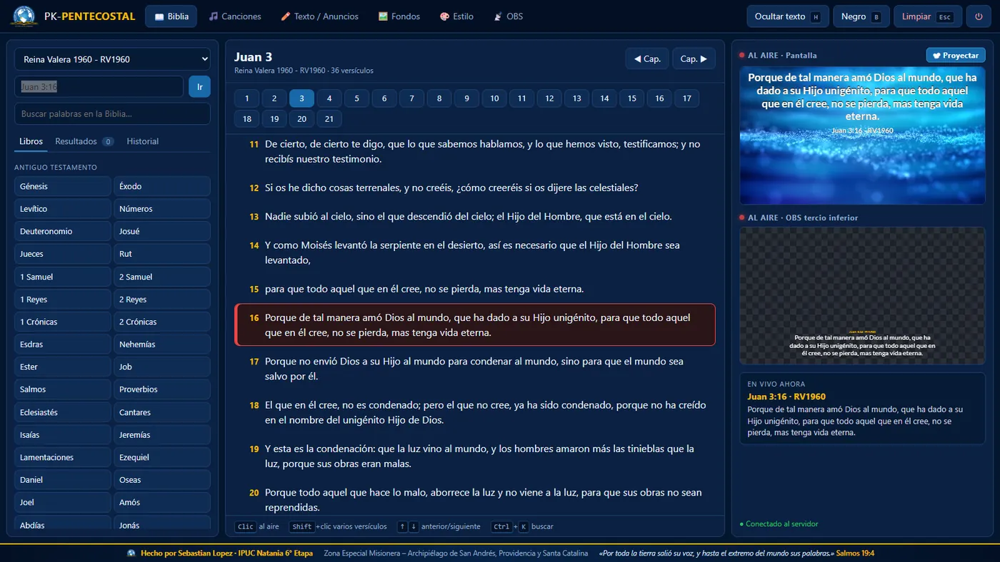
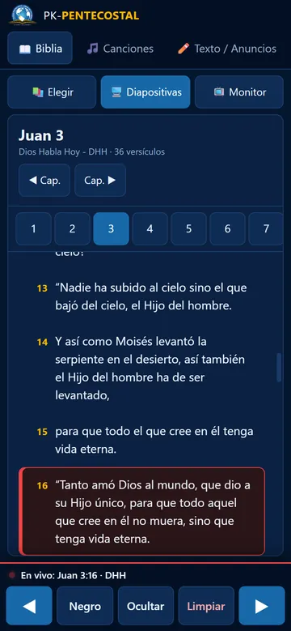

Soporte TI
- Soporte técnico N1, N2 y N3
- Mesa de ayuda y atención al usuario
- Diagnóstico de hardware, software y conectividad
- Mantenimiento preventivo y correctivo
- Gestión y seguimiento de tickets
- Seguimiento de SLA e indicadores de gestión
Coordinador de Sistemas · San Andrés Isla, CO
Coordinador de Sistemas con 2 años de experiencia en soporte e infraestructura TI para hotelería de operación continua 24/7. Técnico SENA en redes internas de telecomunicaciones, con formación en desarrollo de sistemas de información y seis cursos de Cisco Networking Academy.
// 01 — Perfil
Soporte técnico, redes y desarrollo web al servicio de una operación que no se detiene.
Soy Coordinador de Sistemas, con base en San Andrés Isla. Desde noviembre de 2024 trabajo en el área de sistemas del Hotel Grand Sirenis San Andrés, donde comencé como Auxiliar de Sistemas y, tras 21 meses en el cargo, fui promovido a Coordinador de Sistemas en agosto de 2026 por desempeño y capacidad técnica.
Coordino el soporte N1, N2 y N3 del hotel; gestiono la mesa de ayuda con seguimiento de SLA e indicadores; planifico el mantenimiento preventivo y correctivo de equipos; y administro y monitoreo la red interna aplicando buenas prácticas de direccionamiento IP, conectividad y seguridad.
Mi formación combina el título de Técnico en Instalación y Mantenimiento de Redes Internas de Telecomunicaciones del SENA, programas técnicos en análisis y desarrollo de sistemas de información y seis cursos de Cisco Networking Academy. También desarrollo proyectos web propios con HTML, CSS y JavaScript, como PK-PENTECOSTAL, una mesa de ayuda IT y una app de finanzas.
// 02 — Especialidades
Cada habilidad proviene del CV, de un curso acreditado o de un repositorio público.
// 03 — Trayectoria
Hotel Grand Sirenis · San Andrés Isla — desde noviembre de 2024.
Hotel Grand Sirenis San Andrés · Iniciativas Turísticas Vacacionales S.A.S.
Actual Agosto 2026 – Actualidad
Hotel Grand Sirenis · San Andrés
Noviembre 2024 – Julio 2026
Promovido a Coordinador de Sistemas en agosto de 2026, tras 21 meses como Auxiliar, en reconocimiento al desempeño, el dominio técnico y la capacidad de asumir la coordinación del área.
// 04 — Proyecto destacado
Software gratuito para proyectar la Biblia y las canciones en el culto y en la transmisión en vivo, desde un solo panel.


En la iglesia (IPUC Natania 6ª Etapa) había que mostrar versículos y letras en el proyector y, a la vez, en la transmisión en vivo, sin depender de internet durante el culto.
jn 3 16, sal 23) y por palabras.// 05 — Laboratorio de redes
Laboratorio CCNA en Cisco Packet Tracer: tres redes conectadas por un backbone WAN dinámico y protegidas por un firewall perimetral.
show ip eigrp neighbors confirma las adyacencias y show ip route eigrp en R3 muestra la loopback de R1. El ping PC A ↔ PC C valida EIGRP, NAT y ACL trabajando juntos.
// 06 — Más proyectos
Cargados en vivo desde la API pública de GitHub.
// 07 — Formación
Títulos y certificados de formación técnica, del más reciente al más antiguo.
SENA — Centro de Formación Turística, Gente de Mar y Servicios, Regional San Andrés
3 de septiembre de 2026
Corporación Técnica del Magdalena (COTEMAG) — Santa Marta, Magdalena
Diciembre de 2023 · 1.056 horas
Instituto de Formación para el Trabajo y Desarrollo Humano Darseini — Santa Marta, Magdalena
Diciembre de 2022 · 1.200 horas teórico-prácticas
Institución Educativa Técnico Departamental Natania — San Andrés Isla
Diciembre de 2020
// 08 — Cursos y reconocimientos
Certificados de finalización de cursos. No se presentan como certificaciones profesionales de examen.
Ultimate Leisure Club San Andrés Isla, dentro del equipo de sistemas, por desempeño sostenido y compromiso con la operación.
En Ultimate Leisure Club San Andrés Isla y en Grand Sirenis San Andrés, en distintos periodos, por eficiencia en la resolución de solicitudes y servicio al usuario interno.
Representante regional en Pereira en SENASOFT, la competencia técnica nacional del SENA.
Ascenso a Coordinador de Sistemas en agosto de 2026, en reconocimiento al desempeño, el dominio técnico y la capacidad de asumir la coordinación del área.
// 09 — Áreas de aporte
Áreas en las que tengo experiencia o formación, abiertas a oportunidades laborales y colaboraciones.
Soporte N1–N3, gestión de tickets por criticidad e impacto, seguimiento de SLA e indicadores, y mantenimiento preventivo y correctivo de equipos.
Administración y monitoreo de red interna, direccionamiento IP, routers, switches y cableado, con foco en la continuidad de operaciones 24/7.
Sitios responsive y aplicaciones de apoyo con HTML, CSS y JavaScript, como PK-PENTECOSTAL o la mesa de ayuda DESBORD IT.
// 10 — Contacto
Estoy disponible para oportunidades en soporte TI, redes e infraestructura, y para colaborar en proyectos web.
Escríbeme un correo